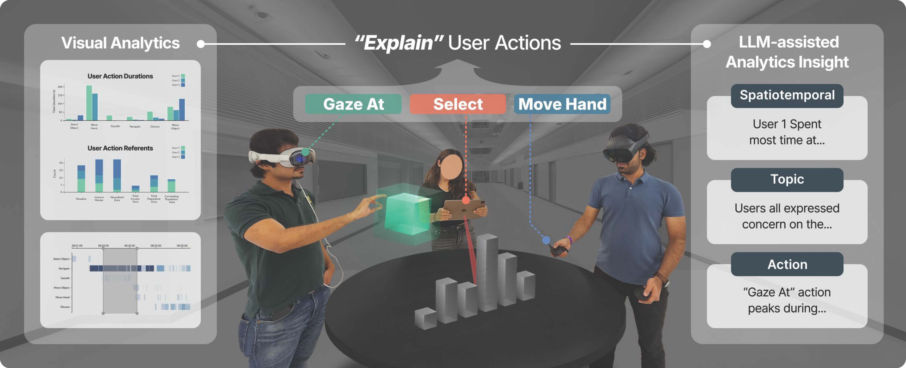
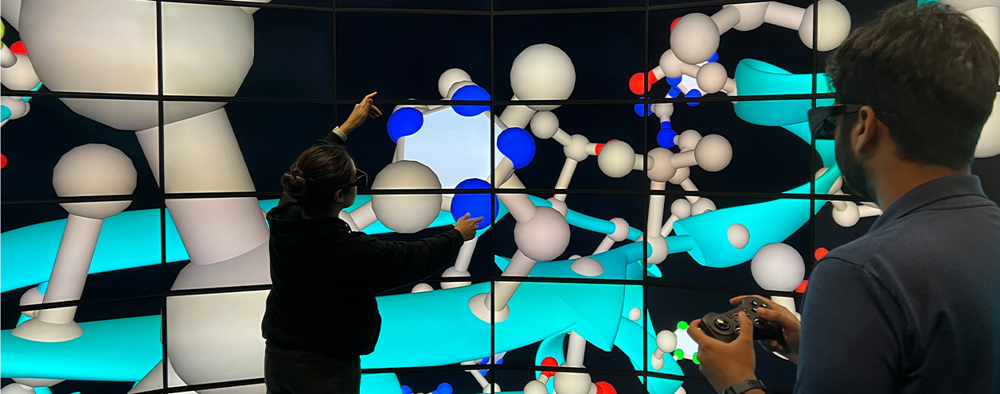
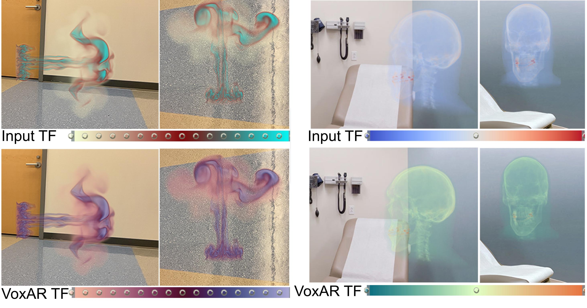
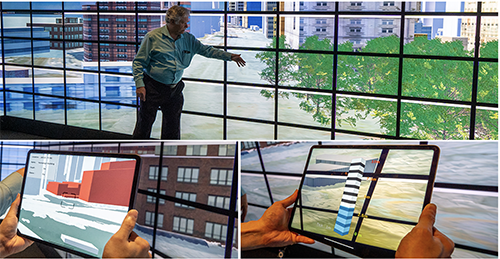
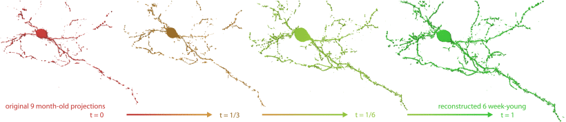

Center for Visual Computing
Stony Brook University (SUNY)
sboorboor [AT] cs.stonybrook.edu
University of Illinois at Chicago
boorboor [AT] uic.edu
Saeed Boorboor
I am currently a Principal Research Scientist at the Center for Visual Computing, Stony Brook University. I received my Ph.D. in CS from Stony Brook University, advised by Prof. Arie E. Kaufman.
My research seeks to design, build, and evaluate visualization systems that empower domain scientists to explore, analyze, and interact with scientific data, using methods of human-centered design, image processing, computer graphics, and applied AI. I am also interested in investigating novel visualization and interaction methods across immersive technologies -- from hand-held and wearable devices to large display modalities.
I will be joining the University of Illinois Chicago (UIC) as an Assistant Professor in the Department of Computer Science, in Fall 2025, where I’ll be affiliated with the Electronic Visualization Laboratory (EVL).
I'm looking for students to join my lab in Fall 2025.
Research Highlights

✸ New -- accepted to IEEE VR 2025 as TVCG paper ✸
Explainable XR: Understanding User Behaviors of XR Environments using LLM-assisted Analytics Framework
Yoonsang Kim, Zainab Aamir, Mithilesh Singh, Saeed Boorboor, Klaus Mueller, Arie E. Kaufman
[Demo]
✸ New -- accepted to IEEE VR 2025 ✸
Silo: Half-Gigapixel Cylindrical Stereoscopic Immersive Display
Saeed Boorboor, Doris E. Gutierrez-Rosales, Ahamed Shoaib, Chahat Kalsi, Yue Wang, Yuyang Cao, Xianfeng Gu, Arie E. Kaufman
[Demo]
VoxAR: Adaptive Visualization of Volume Rendered Objects in Optical See-Through Augmented Reality
Saeed Boorboor, Matthew S. Castellana, Yoonsang Kim, Chen Zhu-Tian, Johanna Beyer, Hanspeter Pfister, Arie E. Kaufman
[Demo]

NeuRegenerate: A Framework for Visualizing Neurodegeneration
Saeed Boorboor, Shawn Mathew, Mala Ananth, David Talmage, Lorna W. Role, and Arie E. Kaufman.
IEEE TVCG 2023.
[Demo]